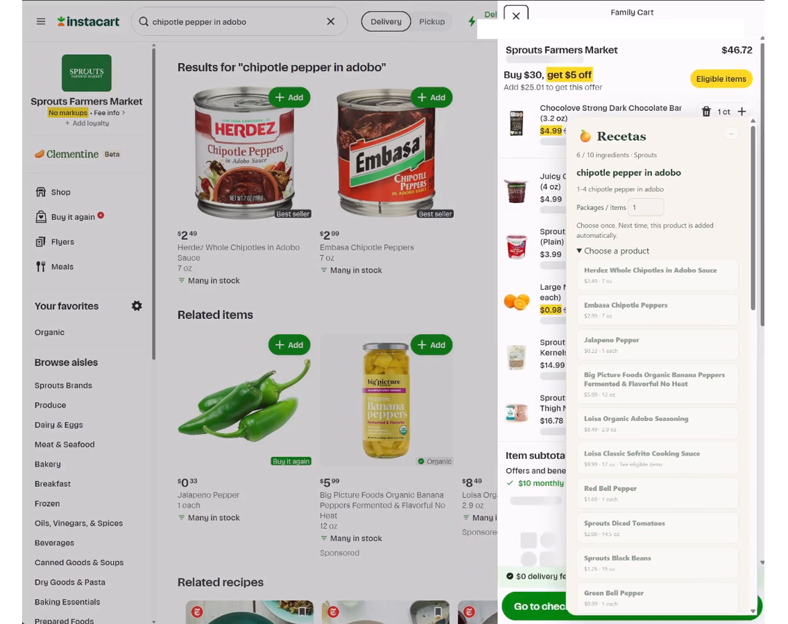

recetas07 / 13
Reuse familiar products automatically
The Chrome helper uses the signed-in Sprouts Family Cart.
It adds saved product choices automatically and checks existing quantities to avoid duplicates.
Choose a new product once, then reuse it.
The demo needed a manual quantity adjustment for weighed chicken.
